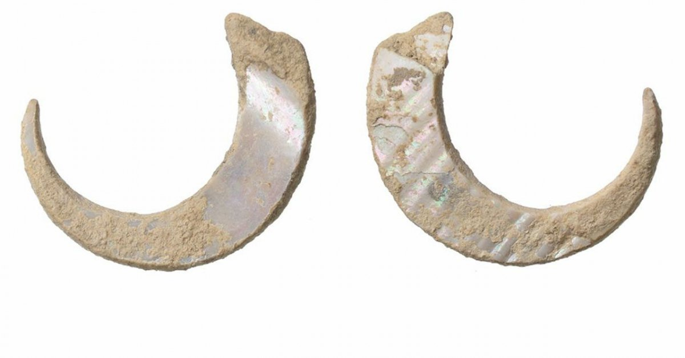

Wędkarstwo to dziedzina sportu, którą ludzka rasa wynalazła już około 35000 lat przed naszą erą, a przynajmniej z tamtego czasu pochodzi najstarszy haczyk odkryty przez archeologów w Japonii.
Od tamtego czasu aż do około XIX wieku wędkarstwo służyło w sumie tylko do pozyskania pożywienia. Natomiast od XIX wieku coraz częściej można było usłyszeć o łowieniu ryb dla sportu i rekreacji. Od tamtego czasu ta dziedzina życia zaczęła się przeradzać w sport/hobby a zarazem coraz lepsze i bardziej skomplikowane narzędzia i techniki zostały opracowane, aby ułatwić i ulepszyć proces łowienia ryb. W XX wieku wędkarstwo zaczęło być uważane za istotny element ochrony środowiska wodnego. Obecnie wędkarstwo jest popularne jako hobby na całym świecie i jest również ważnym sektorem gospodarki. Wędkarstwo zrównoważone jest ważne dla ochrony ekosystemów wodnych i zachowania różnorodności biologicznej. Wędkarstwo może być uprawiane jako amatorska działalność lub jako zawodowa, z licznymi zawodami i konkursami.
